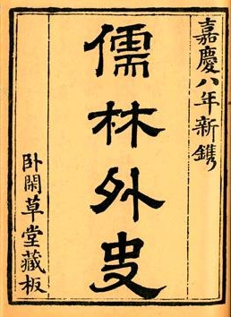

《儒林外史》共五十六回，作者吴敬梓以写实主义描绘各类人士对于“功名富贵”的不同表现，一方面真实地揭示人性被腐蚀的过程和原因，从而对当时吏治的腐败、科举的弊端、礼教的虚伪等进行了深刻的批判和嘲讽；一方面热情地歌颂了少数人物以坚持自我的方式所作的对于人性的守护，从而寄寓了作者的理想。其中的人物性格的刻画深入细腻，人物形象鲜明。
主要人物及介绍
凤鸣岐：性格豪放仁义、壮士身份。这种性格和身份，在救助万中书
杜少卿：”头戴方巾，身穿玉色夹纱直裰，脚下珠履，面色微黄，两眉剑竖，好似画上关夫子眉毛。“轻视礼教，反对歧视妇女，反对纳妾，具有初步的民主主义思想。他蔑视科举，轻视富贵，淡治功名，讲究“文行出处”。他仗义疏财，平等爱人，乃真儒名贤，是作者心目中的理想人物。
鲍文卿：出身梨园、地位低微，但为人正直、知礼守节、重情重义。